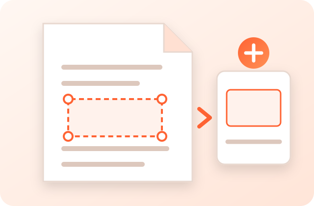

Trim white margins automatically or draw your own crop box, on every page or just a few. You get a new PDF with sharp text.
Free · No sign-up · No watermark · Your PDF stays in your browser

This PDF is password-protected. Enter its password to open it.
The password is used only in this tab. It is not saved or sent anywhere.
The parts outside the box are hidden, not deleted. Don’t use cropping to hide private details.
PDFdukan's Crop PDF tool lets you crop PDF online free in your browser. It removes white margins automatically or uses a box you draw, then saves a new PDF. Pages are not redrawn, so you crop PDF without losing quality.
Text stays selectable, and links, form fields and bookmarks stay in place.
To crop PDF pages online, follow four steps:
Three extras:
Gray paper or a thin dark scanner edge still gets trimmed.
Keep all pages the same size gives same-size pages one shared box.
Save part of a page, like a map, as an image. For whole pages, use PDF to Image Converter.
Both modes at a glance:
| Item | Crop PDF pages | Crop an area to image |
|---|---|---|
| Input | One PDF up to 200 MB | Same |
| Output | PDF with text kept | JPG, PNG, WebP or ZIP |
| Pages | All, one or a range | One page at a time |
For example:
Check pages with Prev and Next. If a footer gets cut, pick Medium.
No. Crop PDF works in your browser tab with the open-source pdf-lib library; the file never reaches a PDFdukan server. The page still loads analytics and ads.
Cropping hides the outside area; it doesn’t delete it. Locked PDFs need Unlock PDF before saving a crop.
Yes. PDFdukan’s Crop PDF tool is free, with no account and no watermark.
Choose Remove white margins, then tap Crop PDF.
No. Only the page box changes; text and images are not redrawn.
Yes. Pick This page only.
Yes. Crop PDF works in Safari or Chrome on iPhone and Android.
No. It is hidden, so don’t use cropping to hide private details.
Connect Google Drive to save selected outputs to your own Drive storage. Review the destination before uploading sensitive documents.
No account? Sign Up free